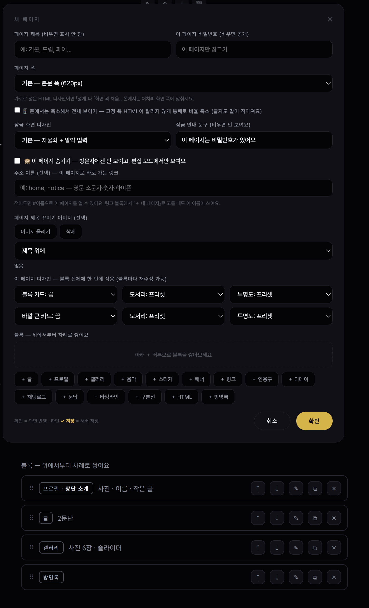
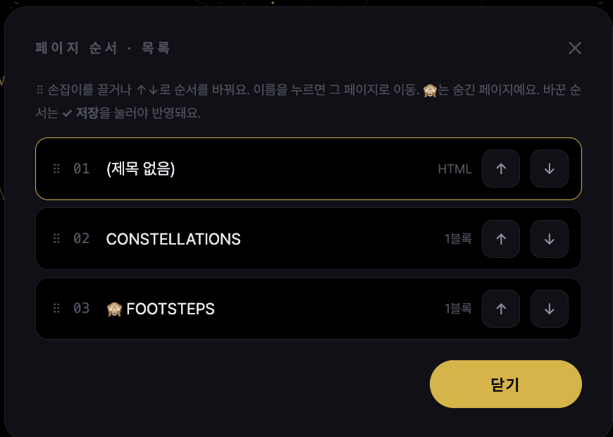
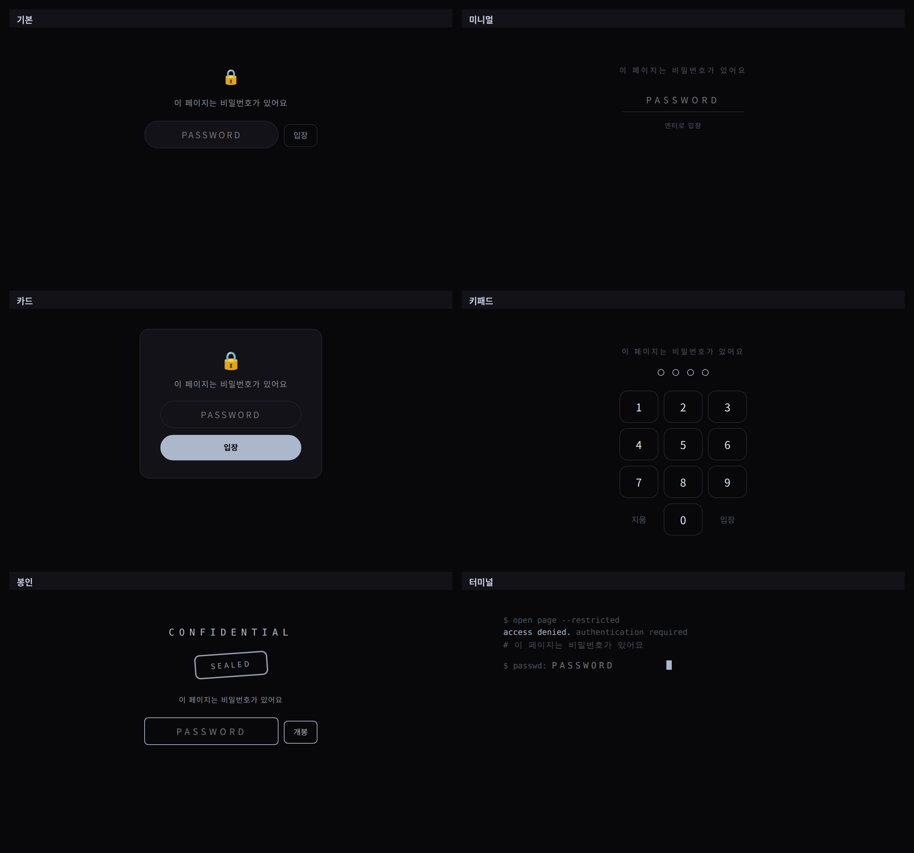

러브인포 · 페이지
페이지 만들기와 관리
러브인포 홈은 「페이지」를 옆으로 넘기는 구조입니다. 페이지는 보통 페이지(블록 쌓기)와 HTML 페이지 두 종류.
페이지 종류
- 보통 페이지
- ＋ 버튼으로 블록을 추가하고, 블록 목록의 ⠿ 손잡이를 끌거나 ↑↓로 순서(폰도 됨). ⧉로 복제. 블록 참고.
- HTML 페이지
- 코드를 통째로 붙여넣는 페이지. 📄 파일 불러오기 가능. 머리글은 자동으로 숨겨집니다(체크로 다시 켬). HTML 페이지·블록 참고.

사진 자리img/li-pages-edit.png관리
- 페이지 목록 — 편집 하단 바의 ☰ 페이지. 전체 페이지(숨김 포함) 순서 바꾸기·이동.
- 숨기기 — 방문자에겐 없는 페이지가 되고 편집 모드에서만 보입니다. 체크를 풀면 그대로 복귀.
- 주소 이름 —
notice처럼 적어두면luvinfo.me/핸들#notice로 그 페이지가 바로 열립니다. 링크 블록의 「＋ 내 페이지」로 메뉴처럼 연결. - 페이지 비밀번호 — 그 페이지만 잠깁니다(대문과 별개). 잠금 화면 디자인 6종·안내 문구. 키패드는 숫자 비번일 때만.
- 페이지 폭 — 기본(620px) · 넓게(960px) · 화면 꽉 채움. 고정 폭 HTML은 「폰에서는 축소해서 전체 보이기」를 켜면 잘리지 않습니다.
- 페이지 넘김 — 점 · 화살표 · 이름 알약 · 숨기기. 넘김 모양(얇은 선·로마 숫자·별·세로 점)과 페이지 전환 효과는 꾸미기에서. ←/→ 키와 스와이프로도 넘어갑니다.
- 제목 꾸미기 — 제목 디자인 5종 + 페이지마다 제목 이미지(위/아래).

사진 자리img/li-pages-list.png
사진 자리img/li-pages-lock.png